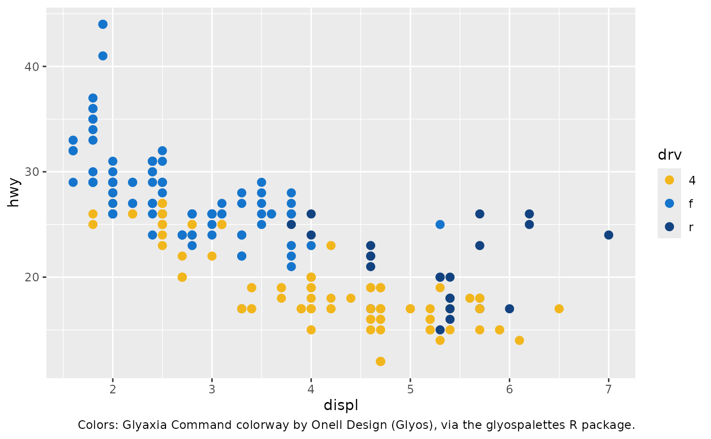

Builds a short attribution sentence naming the colorways used and the companies that designed them, suitable for a figure caption or an acknowledgments section. Naming the designer of a color scheme is ordinary factual attribution; the longer form also states that the colors are approximations and imply no endorsement, which is the wording journals tend to want.
Usage
glyos_credit(
x,
format = c("caption", "acknowledgment", "markdown"),
package = TRUE
)Arguments
- x
What to credit: a palette name, a character vector of names, or a
glyos_paletteobject. Objects fromglyos_pick()andglyos_combine()carry their source palettes, so the credit covers every colorway that contributed a color.- format
One of:
"caption"One sentence for a figure caption, e.g.
Colors: Vice Knight colorway by Toy Pizza (Knights of the Slice), via the glyospalettes R package."acknowledgment"Two sentences in the register of an acknowledgments section, naming the designers and stating that the hex values are approximations that imply no endorsement.
"markdown"The caption with each colorway linked to its reference page, for R Markdown, Quarto or pkgdown captions.
- package
Logical. Mention the glyospalettes package? Set to
FALSEwhen the package is cited elsewhere in the text.
See also
glyos_colorways for the underlying metadata;
citation("glyospalettes") for the package reference.
Examples
glyos_credit("kots_vice_knight")
#> [1] "Colors: Vice Knight colorway by Toy Pizza (Knights of the Slice), via the glyospalettes R package."
glyos_credit(c("glyaxia", "hades", "kabuto_infection"))
#> [1] "Colors: Glyaxia Command and Hades Force colorways by Onell Design (Glyos) and Infection colorway by TheGodBeast (Kabuto Mushi), via the glyospalettes R package."
glyos_credit(glyos_pick(c("glyaxia", "kabuto_infection"), n = 4))
#> [1] "Colors: Glyaxia Command colorway by Onell Design (Glyos) and Infection colorway by TheGodBeast (Kabuto Mushi), via the glyospalettes R package."
glyos_credit("glyaxia", format = "acknowledgment")
#> [1] "Figure colors are derived from the Glyaxia Command colorway designed by Onell Design (Glyos). Hex values are approximations from the glyospalettes R package (Maitner 2026) and imply no endorsement by the designers."
cat(glyos_credit(c("glyaxia", "wom_empyreus"), format = "markdown"))
#> Colors: [Glyaxia Command](https://database.glyos.com/2014/05/glyan-glyaxia-standard.html) colorway by Onell Design (Glyos) and [Empyreus](https://glyos.fandom.com/wiki/Empyreus) colorway by Spy Monkey Creations (Weaponeers of Monkaa), via the glyospalettes R package.
library(ggplot2)
ggplot(mpg, aes(displ, hwy, color = drv)) +
geom_point(size = 2.5) +
scale_color_glyos("glyaxia") +
labs(caption = glyos_credit("glyaxia"))
